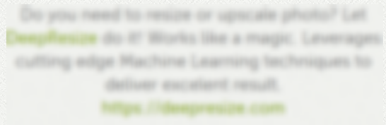
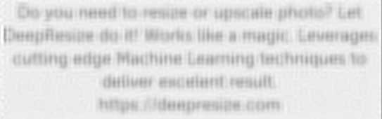

Screenshots
Graphical elementsUse graphical elements to focus attention on the most important informations.
◇ arrows
◇ brackets
◇ squares
◇ Small textual notations
Contrast and white backgroundTake in mind that the the report could be photocopied black&white or or faxed(almost always in black&white).
Because of that:
• make sure that there is
contrast between screenshots and graphical elements• Terminals with
black characters on white background. Easier to see on paper and require less toner from printers.
◇ QTerminal(KaliLinux): File → Preferences → Color scheme:BlackOnWhite
Softwares• Greenshot
◇ Free
• Snagit
◇ Paid
*On Linux there are not great tools for screenshots. Best way is use Linux as VM
Obfuscate sensitive dataWe have to be very careful with the blur feature(Pixelize using pixels of at least half the font height), as it can be deblurred if not done properly.
To deblur screenshot is possible to use software like:
http://smartdeblur.net/download.htmlas shown in the screenshots below:
